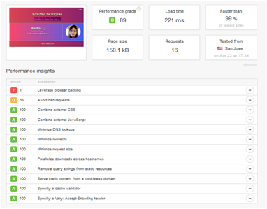

Report
Table of content
1) GETTING STARTED
2) DESIGN
Wireframes
This is the wireframe for home page
This is the wireframe for about page
This is the wireframe for CV page
This is the wireframe for contact page
This is the wireframe for social page
This is the wireframe for mobile responsive
3) SKETCHES
Sketch of Homepage
Sketch of about page
Sketch of CV page
Sketch of Contact page
Sketch ofsocial page
4) PROTOTYPES
Images I have created
Page Load Speed
Visual Appeal
Navigation
5) PROGRSSSION OF WEBSITE OVER 12 WEEKS
Week 1-4
Week 4-8
1st part
2nd part
Week 8-12
1st part
2nd part
6) Validation prove images for html and css:
Validation of html
Validation of css
7) CONCULSION:
1) GEETING STARTED
Throughout this document, the structure of my website that I have changed significantly is shown. Before I started created my webpage, I went around and looked at other people webpages and got some ideas on how I could style and produce mine webpage. So, by looking various work and taking ideas and inspiration from others .I found myself creating a beautiful design which I’ve never done before. This gave me a kind of platform to be able to start and create my own ideas which is the greatest opportunity to me. For creating this webpage I have taken help from many different sites.
2) DESIGN
Wireframes
Wireframe is an important design tool used in web development and It is known as a page schematic or screen blueprint which separates the graphical elements of a website from the functional elements in such a way that users can easily interact with web site. Wireframe can be drawing on a paper by pencil or sketches on the board. It mainly focuses on what a screen does, not what it looks like.
This is the wireframe for homepage.
This is the wireframes for about page.
This is the wireframe for CV page.
This is the wireframe for Contact page.
This is the wireframe for social page.
This is the wireframe for mobile responsive
3)SKETCHES
Sketch Homepage
This is my first sketch which contain my name and navigation bar sitting just below. I want my homepage to be simple and easy so that user can navigate across the whole website. I had added a picture of mine at the left side of the webpage which will spin and hover. And at another corner I had provided short welcome message with animation. At the bottom of each page there is presence of footer .The navigation and the footer are constant for all the pages. There is the presence of icons at the top left side of each pages and will hover when the arrow touches it.
Sketch About page
For my about page I have included the same navigation bar which is present just below the name and the same icons at the top left side which I will be including on each page. I have then got two divisions next to each other. At the right side of the division I have included three images of mine and my friends and it will slides from one image to another image at about 3 seconds. Then at the left side I had included short biography of mine and the text is in animated form.
Sketch CV page
In this CV page I have got two divisions. On the right side of the page I have again divided it into two parts and at the top right part I had included my personal details and at the bottom side I had included my education level. Left side of the page is also divided on the three parts which includes skills, hobbies, and aim.
Sketch Contact page
My contact page is simple and attractive including contact me form which will enable to visitor to send the an email from the form. And my contact page also includes direction with both satellite and street map and also my Gmail address.
Sketch Social page
On this page I have included three social media site with there links so that when we touch the icons it will go to the respective page. And This page is simple and easy to used.
PROTOTYPES
Images I have created
This is my favicon of my website which have created based on starting alphabet of my last name and first name letter. I have also made sure that I didn’t over complicate the favicon else it would have ended up looking silly. It is simple and easy so that user can easily understand the meaning of the logo.
Page load speed
Speed is extremely important and you cannot underestimate it. If the speed is slow then the visitors will get distract and they may leave the page without seeing which is not good.

Visual Appeal
For creating my web site I took ideas from online portfolios to make my website look better and attractive. I have tried to produce and design my website with the simplicity. I also showed my portfolio to my friends, senior brothers, my family member and my tutor teacher and ask them how it looks like and got ideas to improve it for its better and attractive looks. By the suggestion and research I have created a perfect website which is simple, clear and attractive.
Navigation
One of the most important and necessary part of the website to the users for getting detail information of the site. It is one of the best part in which you can explore and move around the website. It should be clear structure and intuitive. Navigation bar at the top of the website is one of the best design so that users can easily use and visit to the other pages. If the navigation bar is not clear and it is too complicated then the visitor didn’t want to stay in this page and may elect to hit the “BACK” button on the first visit of the website.
PROGRESSION OF WEBSITE OVER 12 WEEKS
Week 1-4
On the first month of working on this website I mainly focus on the design, text, and content. On doing research on various portfolio I finally got idea for creating simple and attractive looks for my page and I started working on it at first I search the icons and creating it. Then after I learned about the concept of division and work on it. Firstly, I have added a short description and later started working on text animation in which the letter “Hello” moves from right to left. And later on I had added a picture on the left side which hover/spin. After that I managed all by giving position and margin.
Week 4-8
1st part
On this week I started creating my CV and contact page. For CV I created two division and again divided first division into two parts in which I have include personal detail and education level and for second division i have divided it into three parts which include skills, hobbies, and aim.
2nd part
For the contact page I have simply used the concept of hover and included two divisions for form and direction. In form it included firstname, lastname, phone number and e-mail address and I have named this as a contact me form. At the right side I have give the location in both satellite and street map so that it will be easier to the visitors.
Week 8-12
1st part
This is the final week and the important week in which I had worked on the about page. I have divided this page into two divisions. In the right side I have kept the pictures and simply used the concept of sliding images and each image slide in about three seconds. For the left side I have wrote a complete biography and used the concept on animation.
2nd part
After completing the biography part I stared working on the social part and in this part I have kept the link of three social medias i.e. facebook, instragram, and Google plus. And the navigation part and the footer part are kept same as like all the page.
Validation prove images for HTML and CSS
Validation of HTML

Validation of CSS
CONCLUSION
In the process of making better and attractive portfolio it helped me a lot for understanding the meaning of div, transition, animation, hover, sliding, css3 and so more. This project was so helpful and it teaches me a lot about web and and wish to have this type of project more in coming future .
References
W3Schools Online Web Tutorials. 2018. W3Schools Online Web Tutorials. [ONLINE] Available at: https://www.w3schools.com/. [Accessed 25 February 2018].
Easy Tutorials (2017). How to Create Image Slider Using HTML and CSS | Image Slideshow In Website. [video] Available at: https://www.youtube.com/watch?v=ctI1XUjueaE&t=613s [Accessed 7 Mar. 2018].
Geoff Graham. 2017. Typewriter Effect. [ONLINE] Available at: https://css-tricks.com/snippets/css/typewriter-effect/. [Accessed 11 March 2018].
JSFiddle. 2018. Typing animation with pure CSS - JSFiddle. [ONLINE] Available at: http://jsfiddle.net/leaverou/y8kNx/. [Accessed 11 March 2018].